조경기사 (2005-09-04 기출문제)
1과목: 조경사
1. 원근(遠近)의 착시효과가 강조된 이탈리아의 광장은?
- 성베드로광장
- 포폴로광장
- 성마르코광장
- 델캄포광장
(정답률: 67%)

2. 다정에서 사용되는 [스쿠바이]란 무엇을 가리키는가?
- 물통
- 수로
- 원로
- 샘터
(정답률: 22%)
3. 고대 그리스 건축양식중 중심건물이 되는 파르테논신전의 기둥은 기초석이 없이 조망되어지는 수직성을 강조하는 형태로 조영되었다고 하는데, 어떤 기둥 양식인가?
- 도리아식
- 이오니아식
- 코린트식
- 파르테논식
(정답률: 67%)
4. 중세정원의 주된 경관요소가 아닌 것은?
- Fountaln
- Parterre
- Turiseat
- Water Fence
(정답률: 40%)
5. 다음 설명은 기원전 약 2,500년경에 이집트이 테-네 지방에 만들어졌던 것으로 생각되는 고분변화속의 어떤 권귀(權貴)의 주택정원에 관한 것이다. 잘못 설명된 것은?
- 네 개의 둥근 못(池)속에는 물고기와 오리가 길러지고 있다.
- 좌우 대칭적인 기하학식 정원이다.
- 네모의 부지는 담으로 둘러싸여 있다.
- 주요 조경식물은 포도나무, 대추야자, 무화과 나무등이다.
(정답률: 72%)
6. 중국정원에서 원자(院子)에 관한 설명으로 가장 적당한 것은?
- 건물과 건물사이에 자리잡은 공간으로 화훼류를 가꾸었다.
- 정원을 다스리는 기구로써 송나라 시대부터 있었다.
- 중국 명대의 정원에 관한 전문서적이다.
- 송나라시대의 사대부의 정원이다.
(정답률: 54%)
7. 고려시대의 선원(禪苑)으로 가장 적당한 것은?
- 청평사의 문수원 정원
- 강진의 다산초당
- 청도의 거연정
- 평양의 정통사 정원
(정답률: 74%)
8. 고려시대 궁원의 주요한 구성요소가 아닌 것은?
- 석련지
- 화원
- 석가산
- 격구장
(정답률: 38%)
9. 경상북도 봉화군 봉화읍에 있는 권씨가의 청암정 지원(靑岩亭 池園)에서 볼수 잇는 못의 형태는?
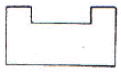
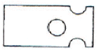
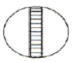
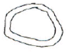
(정답률: 47%)
10. 신선사상에 관한 설명이 잘못된 것은?
- 춘추전국시대에 제사의식이 성행함과 아울러 삼신산설(三神産說)이 출현하였다.
- 삼신산이란 봉래산, 태조산, 방장산을 말한다.
- 진시황의 난지궁과 한(漢무)제의 태액지는 신선사상이 반영된 작품이다.
- 후에 신선사상은 석가산, 괴석, 별서임천(別墅林泉)의 풍치에 까지 영향을 미쳤다.
(정답률: 38%)
11. 브리지맨에 대한 설명중 맞지 않는 것은?
- 부지를 작게 구획짓는 수법을 구사하였다.
- 최초로 하하수법을 사용하였다.
- 버킹검의 스토우원을 설계하엿다.
- 궁원(宮苑)의 관리를 맞고 있던 사람이다.
(정답률: 43%)
12. 일본의 고산수식(枯山水式)정원에 관한 기술중 옳은 것은?
- 아스까(飛鳥)시대의 조경 양식이다.
- 흰모래를 깔아 유수(流水)를 나타내는 등 상징적인 표현을 하였다.
- 정원의 중심부에 못을 파고 섬과 다리를 만들어서 정원의 아름다움을 즐기도록 한 조경 양식이다.
- 나라시대에 발달된 조경양식으로 습윤지성 수종을 많이 사용하였다.
(정답률: 48%)
13. 경복궁 교태전 후원의 화계(花階)에 대한 설명으로 알맞은 것은?
- 석지와 굴뚝 그리고 산죽군락이 있다.
- 석지와 굴뚝 그리고 낙엽성 화목이 있다.
- 설등과 석지 그리고 낙엽성 화목이 있다.
- 석등과 굴뚝 그리고 상특성 관목이 있다.
(정답률: 67%)
14. 고대 이집트 조경양식에 가장 큰 영향을 미친 사항은?
- 무더운 기온과 사막의 바람
- 나일강의 불규칙한 범람
- 태양신과 신전
- 피라미드(Pyramld)와 마스티바(Mastaba)
(정답률: 80%)
15. 사찰에는 불영(佛影), 탑영(塔影,) 산영(山影)등을 비치도록 하기위해 만든 영지가 조경의 중요한 요소가 되어왔다. 다음 중 산의 그림자를 비치도록 만든 산영지가 아닌 것은?
- 미륵사지 영지
- 해안사 영지
- 청평사 영지
- 실상사 영지
(정답률: 40%)
16. 다음 칼버트 보우(Calvert Vaux)의 대표적 작품은?
- 미국의 센트럴 파크(Central Park)
- 블란서의 샤도(Chateau)
- 시카고(Chicago)의 만국박람회장
- 영국의 스토우(Stowe)정원
(정답률: 67%)
17. 빌라 랑태(Villa Lante)의 설명으로 다음 중 옳지 않은 것은?
- 별장은 담으로 둘러 싸인 일종의 공원으로서 바그나이아시를 압도하고 있다.
- 네 개의 다리가 이섬을 연결하고 있고 섬속에는 네 사람의 무어인이 별과 벌집을 높이 받치고 있는 아름다운 군상이 새겨진 Montalto 분수가 있다.
- 제2테러스는 두 개의 잔디밭과 플라타너스가 군식되어 있다.
- 빌라(Vlla)전체의 공간은 완전히 비대칭적 요소만을 모아서 이루어진 작품이다.
(정답률: 69%)
18. 지당(池塘)속의 암반(巖盤)위에서 화려한 색깔의 옷을 입은 여인들이 춤을 추게하여 그 그림자가 물속에 일렁이는 거울현상을 보고 즐겼던 윤고산(尹孤山)의 유적은?
- 세연지(洗然池)
- 동천석실(洞天石室)
- 낙서재(樂書齋) 방연지(方蓮池)
- 낭음계(郎吟溪)
(정답률: 47%)
19. 고려시대에 이동식 정자를 구상한 사륜정기(四輪亭記)와 이소원기(理小園記는 누가 쓴 글인가?
- 기홍수
- 윤언문
- 이규보
- 최자
(정답률: 80%)
20. 다음 서양의 조경에 관한 설명중 옳지 못한 것은?
- 미국 조경의 특징은 동서양의 조경양식이 모두 이용되었다.
- 분구원(分區園)은 제2차 세계대전후 영국에서 시작되었다.
- 프레드릭로 옴스테드(Fredrick Law Omsted)는 미국조경의 시조라 한다.
- 전원도시(garden city)는 에베네져 하워드(Evenezer Howard)에 의해 주장되었다.
(정답률: 87%)
2과목: 조경계획
21. 다음 중 공원이용율에 의한 전체공원의 면적수요를 산출시 거리가 먼 것은?
- 공원이용자 전체의 활동면적
- 공원유형별 이용자수
- 공원유형별 이용률
- 유효면적률
(정답률: 27%)
22. 조경계획을 위한 대상지 분석중 시각적 영향에 관한 설명으로 틀린 것은?
- 시각적 흡수성이 높으면 시각적 영향이 낮다.
- 시각적 복잡성이 높으면 시각적 영향이 낮다.
- 시각적 투과성이 높으면 시각적 영향이 낮다.
- 시각적 복잡성을 시각적 선호와 거꾸로 된 U자 형태의 관계를 지닌다.
(정답률: 25%)
23. 사람들에게 내재해 있는 수요로 적당한 시설, 접근수단, 정보가 제공되면 참여가 기대되는 수요는?
- 잠재수요
- 유도수요
- 표출수요
- 유효수요
(정답률: 67%)
24. 도시환경에 있어 형태(form)와 행위(activity)의 일치에 대한 연구를 하여 도시의 물리적 형태가 지난 행위적 의미의 상호 관련성을 분석한 사람은?
- 케빈 린치(Kevln Lynch)
- 칼 스타이니츠(Carl Stenintz)
- 로오렌스 할프린(Lawrence Halprin)
- 아버나티와 노우(Avernathy and Noe)
(정답률: 43%)
25. 다음 적지(適地)선정 기법에 관한 설명으로 옳은 것은?
- 제약요소를 중첩시킬 때 여러 가지 요소를 전문가가 주관적으로 판별하여야 한다.
- 일반적으로 주어진 토지이용에 부정적인(megatlve)지역을 제외한 지역이 적지이다.
- 단위공산에 비교적 다양한 정보를 중첩시켜 평가한다.
- 이 방법은 계량화할 수 없는 요소는 포함시킬수가 없다.
(정답률: 59%)
26. 다음 중 도시의 가로 형태가 나머지와 다른 하나는?
- 밀레투스
- 필라델피아
- 경주
- 워싱턴 D.C.
(정답률: 28%)
27. 주택정원의 기능 분할(zoning)은 크게 전정(前庭), 주정(主庭), 후정(後庭) 및 작업(作業)공간으로 나우어 질수 있다. 다음 중 후정을 설명하고 있는 것은?
- 가족의 휴식과 단란이 이루어지는 곳이며, 가장 특색있게 꾸밀 수 있는 장소이다.
- 장독대, 빨래터, 건조장, 채소밭, 가구집기, 수리 및 보관장소 등이 포함될 수 있다.
- 바깥의 공적(公的)인 분위기에서 주택이라는 사적(私的)인 분위기로 들어오는 전이공간이다.
- 실내 공간의 침실과 같은 휴양공간과 연결되어 조용하고 정숙한 분위기를 갖는 공간이다.
(정답률: 59%)
28. 다음의 환경지각 반응과정에 대한 설명중 맞는 것은?
- 환경인지 : 시각적 복잡성, 개인이 느끼는 의미, 상징적으로 설계에 적용
- 행위의도 : 행동(반응)하기 전 단계로 특별한 행위를 할 것인가? 하지 않을것인가? 의 단계
- 환경지각 : 현존하는 혹은 과거에 경험했던 정보를 저장, 추출하는 과정
- 환경태도 : 이미지, 정체성, 식별성과 관계된다.
(정답률: 43%)
29. 공동주택을 건설하는 주택단지의 대지안에 확보하여야 하는 녹지면적의 비율은?
- 2/10 이상
- 3/10 이상
- 4/10 이상
- 5/10 이상
(정답률: 34%)
30. 자연공원의 용도지구중 개발이 가장 활발히 일어나는 지구는?
- 공원자연환경지구
- 공원자연마을지구
- 공원밀집마을지구
- 공원집단시설지구
(정답률: 57%)
31. 국토의 계획 및 이용에 관한 법률중 도시계획 기반시설인 광장의 종류로서 규정되어 있지 않는 것은?
- 교통광장
- 일반광장
- 지하광장
- 미관광장
(정답률: 43%)
32. 도시공원을 설치함에 있어서 필수적인 공원시설이 아닌 것은?
- 휴향시설
- 교양시설
- 상업시설
- 공원관리시설
(정답률: 47%)
33. 고속도록 휴게시설 계획에서 이용자 측면의 입지 선정조건에 포함되지 않는 것은?
- 시설의 식별성
- 인접지의 토지이용 형태
- 유지, 관리의 경제성
- 기상조건
(정답률: 30%)
34. 도시내 광장에서 그룹간 대화를 촉진시키기 위해서는 다음 4종류의 Hall의 개인적 거리(personal distance)중 어떤 것이 바람직한가?
- 친밀한 거리
- 개인적 거리
- 사회적 거리
- 공적거리
(정답률: 37%)
35. 다음 중 도시공원 및 녹지등에 관한 법률로 공원을 세분화하면 생활권공원과 주제공원으로 구분할수 있는데, 생활권공원에 해당되지 않는 것은?
- 소공원
- 어린이공원
- 체육공원
- 근린공원
(정답률: 69%)
36. 환경심리학의 특징에 관한 설명중 적합지 않은 것은?
- 환경과 인간형태의 관계성을 종합된 하나의 단위로서 연구한다.
- 현실적인 인간형태에 대한 문제 해결을 위한 이론 및 그 응용을 연구한다.
- 도심지 환경영향평가시 계량회된 주요지표로 이용한다.
- 환경과 인간행태 상호간에 형향을 주고받는 상호작용을 연구한다.
(정답률: 50%)
37. 대기오염, 소음, 진동, 악취 그 밖에 이에 준하는 공해와 각종사고나 자연재해 그밖에 이에 준하는 재해의 방지를 위하여 설치되는 도시공원 및 녹지 등에 관한 법률의 시설은/
- 연결녹지
- 보전녹지
- 완충녹지
- 경과녹지
(정답률: 70%)
38. 우리나라의 주택건설 기준에서 복지시설중 어린이놀이터에 관한 설명으로 거리가 먼 것은?
- 어린이놀이터는 그 폭을 5m(면적이 150m2 미만인 경우에는 3m)이상으로 하여야 한다.
- 100세대 이상인 경우에는 300m2에 100세대를 넘는 매세대마다 1m2를 더한 면적으로 산정한다.
- 100세대 미만인 매 세대당 시,군지역은 2m2의 비율로 산정한 면적으로 설치한다.
- 어린이놀이터는 놀이시설 기타 필요한 시설을 설치하되 안전성을 확보할수 있는 강도와 내구성을 갖춘 재료를 사요하여야 한다.
(정답률: 37%)
39. 도시 오픈스페이스의 효용성에 해당하지 않는 것은?
- 도시개발의 조절
- 도시환경의 질
- 시민생활의 질
- 개발유보지 조절
(정답률: 39%)
40. 다음 중 기본계획에 포함되지 않는 것은?
- 토지이용계획
- 식재계획
- 집행 및 관리계획
- 시공도면 및 시공계획
(정답률: 23%)
3과목: 조경설계
41. 최근의 환경설계분야에서는 과학적 설계에 대한 관심이 높아지고 있다. 과학적 설계에 관한 설명으로 틀린 것은?
- 설계자의 창의력은 임의성이 많으므로 과학적 방법으로 완전히 대체하고자 하는 것이다.
- 설계자의 직관 및 경험에만 의존하지 않고 합리적 접근이 가능할 분야는 과학적 방법을 이용한다.
- 과학적 설계연구 자료에 근거하여 설계한다.
- 이용자의 형태, 선호 및 가치를 최대한 고려한다.
(정답률: 45%)
42. 다음 중 리트(Litton)이 제시한 유형별 시각적 훼손가능성이 바르지 않은 것은?
- 밝은 색보다는 어두운 색의 토양이 시각적 훼손 가능성이 높다.
- 저지대보다는 고지대가 시각적 훼손 가능성이 높다.
- 완경사보다는 급경사지역이 시각적 훼손 가능성이 높다.
- 흔효림보다는 단순함이 시각적 훼손 가능성이 높다.
(정답률: 58%)
43. 단위 포장재 가운데 흙벽돌의 특성이 아닌 것은?
- 기초에 적당한 아스팔트성 안정제를 포함할 경우 지속적인 사용이 가능한다.
- 많은 열을 축적한다.
- 추운 지역에서 사용 가능하다.
- 부서지기 쉽다.
(정답률: 53%)
44. 투시도 작성시 소점(消点, Vanlsh polnt)을 설명한 것은?
- 화면과 지면이 만나는 선
- 물체와 시점 간의 연결선
- 물체의 각 점이 수평선상에 모이는 점
- 정육면체의 측면 깊이를 구하기 위한 점
(정답률: 69%)
45. K.Lynch가 주장하는 경관의 이미지 요소중에서 관찰자의 이동에 따라 연속적으로 경관이 변해가는 과정을 설명해 줄수 있는 것은?
- Landmark(지표물)
- Path(통로)
- Edge(모서리)
- District(지역)
(정답률: 47%)
46. 다음 설명 중 틀린 것은?
- 계단의 디딤면을 s, 챌면을 h로 할 때 이들간의 관계는 2h+s=60~65cm의 비례 관계가 성립된다.
- 일반적으로 경사로의 최대 구배는 8.3%를 넘지 않도록 하여야 휠체어가 다닐수 있다.
- 보행자를 보호하기 위한 경우, 차도면에서 최소한 20cm의 높이로 경계석이 돌출되어야 한다.
- 맨홀은 통로 본체의 안지름이 1~1.2m정도 되게 하여 작업에 불편을 주지 않도록 해야 한다.
(정답률: 36%)
47. 다음 공간의 축(軸)에 관한 설명중 옳지 않은 것은?
- 축은 여러 부분적 공간에 통일성을 부여한다.
- 축은 직선 혹은 곡선일수 있다.
- 축은 좌우대칭 혹은 비대칭일수 있다.
- 축은 반드시 클라이막스를 필요로 한다.
(정답률: 70%)
48. 사적지 조명에 대한 설명으로 적합하지 않는 것은?
- 조명등 설계시 고유의 전통문양을 도입하면 좋다.
- 온화하고 아늑한 분위기를 연출한다.
- 조명등의 높이는 4m이상으로 한다.
- 조명등의 색채는 황색계열의 조명등을 사용한다.
(정답률: 58%)
49. 지하배수관 매설시 비교적 소면적인 곳에서 전지역을 균일하게 배수하려 할 때 사용하는 방법은?
- 어골형
- 빗살형
- 부채형
- 자연형
(정답률: 32%)
50. 조경설계와 관련된 제도(KS)규약 문자스기 요령중 틀린 것은?
- 문장의 기록방법은 좌측부터 하고, 필요에 따라 나우어 적을수도 있다.
- 문자의 크기는 문자의 너비로 표현한다.
- 숫자는 수로 아라비아 숫자를 원칙으로 한다.
- 한글자의 서체는 활자체에 준한다.
(정답률: 52%)
51. 다음 그림은 도형조직의 원리 가운데서 어느것에 가장 적당한가?
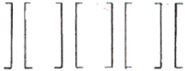
- 근접성
- 유사성
- 방향성
- 완결성
(정답률: 40%)
52. 2대의 휠체어가 동시에 비켜나갈수 있는 통로의 폭은?
- 120cm 이상
- 140cm 이상
- 160cm 이상
- 180cm 이상
(정답률: 24%)
53. 다음 중 경관디자인 개념에 도달하지 못하는 것은?
- 상상성과 현실성이 종합된 해결안을 제시
- 물리적, 시각적 또는 종합적 문제의 해결
- 주어진 지역내의 소재, 요소 그리고 배치에 관한 결정
- 시각적 미의 효과만을 얻기위한 그림
(정답률: 49%)
54. 분수의 수조 너비에 관한 내용 중 적당하지 않은 것은?
- 수조의 깊이는 다양한 기준들이 있지만 일반적으로 안전을 고려해 25~35cm를 직정 깊이로 제시한다.
- 바람의 영향이 큰 지역은 분사되는 높이의 4배
- 분사되는 물의 최고점과 수조의 경계부위는 45°의 각도를 이루게 된다.
- 수조의 크기는 분사되는 높이의 2배
(정답률: 30%)
55. 다음 중 수자(水姿)패턴의 유형에 포함되지 않는 것은?
- 유수형
- 낙수형
- 명경수형
- 평정수형
(정답률: 54%)
56. 2개의 삼각자(1조)를 이용하여 그릴수 없는 것은?
- 15°
- 30°
- 60°
- 75°
(정답률: 17%)
57. 경관에 대해서 여러 사람들이 어떤 종류를 얼마나 좋아하고 싫어하는가를 분석하여 표준적인 경관유형을 도출하려는 시도를 하는 작업은?
- 경관 구성요소 분석
- Mental Map Analysis
- 경관의 선호도 분석
- Terraln Analysls
(정답률: 59%)
58. 다음 색의 3속성 중 명도와 관련된 내용으로 거리가 먼 것은?
- 명도는 기호“V"로 표시한다.
- 명도는 색의 밝고 어두운 정도를 말하고유채색에만 존재한다.
- 노랑색은 가장 밝게, 다음은 주홍이며 빨강과 초록은 중간정도 밝기이고, 보라와 파랑은 어둡게 느껴진다.
- 같은 명도의 색이라도 주어진 광원의 밝고 어두운 점도에 따라 명도가 다르게 느께지기도 한다.
(정답률: 40%)
59. 거의 평탄지로 인식되며 활동하기 쉽고 배수상태는 양호한 포장구배는?
- 1%이하
- 1~4%
- 5~10%
- 11~15%
(정답률: 58%)
60. 색필터 또는 그 밖의 흡수매체에 의해 색을 혼합하면 할수록 순색의 강도가 약해져 원래의 색상보다 명도가 낮아지는 혼합은?
- 가법혼색
- 감법혼색
- 회전혼색
- 병치혼색
(정답률: 69%)
4과목: 조경식재
61. 다음 중 식물의 건축학적인 이용은?
- 음향조절
- 공간의 분할
- 온도조절
- 반사조절
(정답률: 62%)
62. 수목의 성상에 따른 이식 적기가 맞지 않는 것은?
- 침엽수는 3월 중순 ~ 4월 중순이다.
- 낙엽수는 3월중 하순 ~ 4월 상순의 개서전(開鋤前)과 10월 중순 ~ 11월 중순이다.
- 상록활엽수는 일반적으로 춘기 개서전(開鋤前)과 신엽이 굳어진 4월 상순~ 5월 하순이다.
- 대나무는 죽순이 지상으로 나타나기 직전인 3월 ~ 4월에 실시하나 내한성이 강한 것은 가을이 좋다.
(정답률: 47%)
63. 6톤 트럭의 평떼 적재량을 갖고 이음매 4cm가 되게 이몸매 붙이기로 잔디밭을 조성하려고 한다. 잔디밭 조성의 최대 가능 면적은? {단, 평떼 적재량은 1,200매이고 잔디규격은 표준규격(0.3×0.3×0.3)이다.}
- 약100m2
- 약122m2
- 약154m2
- 약192m2
(정답률: 22%)
64. 중앙분리대 식재에 대한 설명으로 적절치 않은 것은?
- 분리대의 너비는 12cm이상으로 하는 것이 이상적이다.
- 정형식은 같은 크기와 생김새를 가진 나무를 일정한 간격으로 식재한다.
- 랜덤식은 차광효과가 떨어지고 단목적(單木的)유지 관리가 필요하다.
- 2m이하의 좁은 분리대에서 사용하는 방현망(防眩網)은 식수에 비해 미관과 차광효과가 떨어진다.
(정답률: 10%)
65. 다음 중 아황산가스에 대한 저항성이 가장 강한 수종은?
- Chamaecyper Is plslfera Endl.
- Abies holophylla Max.
- Picea abies Karst
- Plnus denslflora S. et Z.
(정답률: 34%)
66. 다음은 생태연못이나 저습지 등을 조성할 때 도입되는 수생식물을 분류한 것이다. 옳지 않게 연결된 것은?
- 추수식물 - 식물의 뿌리를 물속의 토양에 두고 있으며, 몸의 일부가 수면위로 나온 식물 - 갈대, 줄, 부들
- 부엽식물 - 식물의 뿌리와 잎이 수면에 떠서 생활하는 식물 - 마름, 순채
- 침수식물 - 식물의 몸 전체가 물속에 잠겨서 생활하는 식물 - 검정말, 나사말
- 부수식물 - 식물의 몸 전체가 수면에 떠서 생활하는 식물 - 개구리밥, 생이가래
(정답률: 35%)
67. 건물이나 부지 윤곽이 원로의 방향으로 결정짓고, 원로는 또한 식재를 관련짓게 하는 수법에서 벗어나 구조물에 구애됨이 없는 식재설계로 경관을 구성하는 식재수법으로 볼수 없는 것은?
- 아메바형
- 루버형
- 절선형(折線型)
- 교호식 열식형
(정답률: 34%)
68. 다음 식재기능에 관한 설명중 옳지 않은 것은?
- 미기후를 개선한다.
- 건물의 딱딱한 직선을 완화시킨다.
- 소음을 감소시켜 준다.
- 공간을 시각적으로 개방시킨다.
(정답률: 54%)
69. 2차 전이 지역이 아닌 것은?
- 내려진 농경지
- 벌목한 삼림
- 새로 생긴 연못
- 모래 언덕
(정답률: 36%)
70. 미적 효과와 관련한 식재형식중 경관식재와 밀접한 관계가 없는 것은?
- 표본식재
- 산울타리식재
- 경재식재
- 방풍식재
(정답률: 74%)
71. 다음 중 녹음수로서 적합한 수목만을 예시한 것은?
- 동백나무, 미루나무, 노간주나무, 전나무
- 측백나무, 편백, 화백, 주목
- 느티나무, 다릅나무, 가중나무, 은행나무
- 향나무, 쥐똥나무, 백목력, 조팝나도
(정답률: 39%)
72. 브라운 블랑케(Braun-Blanqute)의 식물 군락구조에서 우정도를 나타내는 항목은?
- 피도
- 빈도
- 밀도
- 균재도
(정답률: 23%)
73. 배식원리를 그림과 같이 표현할수 있다면 이 그림이 나타내고 있는 원리는?
- 반복성(repetiton)
- 다양성(Variety)
- 강조성(emphasls)
- 방향성(sequence)
(정답률: 62%)
74. 영양번식에 의한 잔디밭 조성에 대한 설명중 맞는 것은?
- 조성공사에 시간적 제한이 거의 없으나 비용이 들고 공사기간이 비교적 길다.
- 급경사지 뿐만 아니라 암반지역에서도 50% 이상의 비복이 가능하다.
- 세밀한 관리가 필요하며 한정된 시기에만 공사가 가능하다.
- 주로 불량 토질에 사용되는 방법이며 잔디의 피복속도가 느리다.
(정답률: 32%)
75. 식재구성에서 색채와 관련된 이론으로서 옳지 않은 것은?
- 정원에서 휴식과 평화로운 분위기를 주도록 잎의 녹색은 관목의 꽃보다 더욱 중요하게 취급된다.
- 정원에서 녹색을 가진 수목은 화려한 식물보다 9:1정도로 월등히 수가 많아야 한다.
- 밝고 선명한 색채는 희미하고 연한 색채에 비하여 고운 질감을 지닌다.
- 색의 변화는 연속성을 파괴하지 않도록 점진적인 단계를 두어야 한다.
(정답률: 62%)
76. 고유수형이 원정형(圓嵿形, round head)인 조경수종이라고 볼수 없는 것은?
- Aesculus turbinata Bl.
- Sorbus commixta Hedl.
- Euonymus alatus Sieb
- Diospyros kaki Thunb.
(정답률: 12%)
77. 천이 개시 시기의 환경조건에 의하여 천이를 구분할수 있는데 육상의 암석지, 사지등과 같은 환경조건에서 전개되는 천이는?
- 상차천이
- 이차천이
- 건생천이
- 습생천이
(정답률: 53%)
78. 방풍식재에서 산울타리의 경우 가장 효과적인 밀도를 유지하기 위하여 얼마의 밀폐도가 적당한가?
- 15~25%
- 25~35%
- 45~55%
- 65~75%
(정답률: 17%)
79. 가이아의 가설은 생태계의 어떤 측면을 언급한 것인가?
- 자동제어체계
- 에너지흐름
- 생지화학적순환
- 종다양성
(정답률: 36%)
80. 고수부지와 같이 침수가 예상되는 곳에 적당한 조경용수종으로 바르게 연결된 것은?
- Alnus japonica Steud, Albizzia julubrissin Duraz
- Ailanthus altissima Swingle, Styrax jsponica S
- Paulownia tomentosa Steud, Cercis chinensis Bunge
- Fagus multinervis Nak. Cinnamomum camphora S
(정답률: 46%)
5과목: 조경시공구조학
81. 도급자가 낙찰후 공사에 투입할 예산을 편성할 때 실제로 공사할 단가를 적용하여 산출하는 견적(적산)을 무엇이라 하는가?
- 설계견적
- 입찰견적
- 실행견적
- 상세견적
(정답률: 77%)
82. 다음 그림에서 단면 A=250m2, 단면 B=200m2, 단면 C=150m2일 때,양단면평균번에 의한 그림의 토량은?
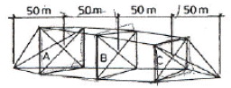
- 30,000m2
- 40,000m2
- 50,000m2
- 60,000m2
(정답률: 32%)
83. 콘크리트의 워커빌리티(시공연도)에 관한 다음 설명중 맞지 않는 것은?
- 상온에서는 굳지않은 콘크리트의 온도가 높을수록 워커빌리티가 좋아진다.
- 일반적으로 시멘트의 사용량을 증가시키면 워커빌리티가 좋아진다.
- 물의 양이 많을수록 시공성이 좋아지나 너무 많으면 재료분리를 일으키기 쉽다.
- 굵은 골재료는 꺤 자갈보다 강 자갈을 쓸 때 워커빌리티가 좋아진다.
(정답률: 31%)
84. 다음 중 조적벽(벽돌균)의 균열의 원인은 크게 설계와 시공의 경우로 구분하는데 그 중 시공상의 결항은?
- 기초의 부동침하
- 건물의 평면, 입면의 불군형 및 벽의 불합리한 배치
- 벽돌 및 모르타르의 강도부족
- 벽돌벽의 길이, 높이에 비해 두께가 부족하거나 벽체강도 부족
(정답률: 67%)
85. 용적이 1m2되고, 중량이 1,500kg 되는 시멘트는 몇 포대의 시멘트를 지칭하는가?
- 약 35포대
- 약 37.5포대
- 약 40포대
- 약 42.5포대
(정답률: 65%)
86. 시공자의 선정방법중 지나친 경쟁으로 인한 부실공사를 막기위해 기술과 경험이 풍부하고 신용있는 특정다수의 업체를 선정하여 경쟁 입찰토록 하는 방법은?
- 일반경쟁입찰
- 지명경쟁입찰
- 제한경재입찰
- 수의계약
(정답률: 50%)
87. 다음 도시(圖示)의 축에 관한 단면 2차 모멘트의 값은?
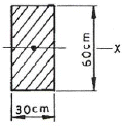
- 54,000cm4
- 90,000cm4
- 540,000cm4
- 900,000cm4
(정답률: 43%)
88. 다음 중 재료별 할증률(%)의 적용값이 다른 것은?
- 잔디
- 목재판재
- 시멘트 벽돌
- 단열재
(정답률: 29%)
89. 구조물에 하중이 작용하면 각 지점(支点)에 생기는 힘을 무엇이라 하는가?
- 반력(反力)
- 합력(合力)
- 분력(分力)
- 우력(偶力)
(정답률: 42%)
90. 다음 중 수준측량에 사용되는 용어의 설명으로 거리가 먼 것은?
- 지표면의 어느 점으로부터 중력방향을 수평선이라 한다.
- 수준면과 지구의 중심을 포함한 평면이 교차하는 선을 수준선이라 한다.
- 지반면의 높이를 비교하 때 기준이 되는 면을 기준면이라고 한다.
- 수준 원점으로부터 국도 및 주요 도로변에 2~4km마다 수준 표석을 설치하고 표고를 경정하여 놓은 점을 수준점이라 한다.
(정답률: 48%)
91. 적산할 경우 수량의 환산기준 중 틀린 것은?
- 분수는 약분법을 쓰지 않으며, 각 분수마다 그의 값을 구한다음 전부의 계산을 한다.
- 수량의 단위 및 소수위는 표준품셈 단위표준에 의한다.
- 수량의 계산은 지정 소수위 이하 1위까지 구하고 끝수는 버림한다.
- 계산에 쓰이는 분도(分度)는 분까지, 원둘레율(圓周率)의 유효숫자는 3자리(3위)로 한다.
(정답률: 23%)
92. 다음 그림에서 굽힌 모멘트의 최대치는?
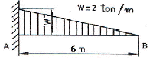
- -4tㆍm
- -6tㆍm
- -8tㆍm
- -12tㆍm
(정답률: 15%)
93. Rankine의 토압이론에 의하면 그림과 같이 옹벽뒤 배토의 지표면이 수평일 경우 토압의 작용점은 어디인가?
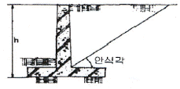
- 옹벽높이의 1/2 지점에 수평으로 작용
- 옹벽높이의 1/2 지점에 안식각과 같은 각으로 작용
- 옹벽높이의 1/3 지점에수평으로 작용
- 옹벽높이의 1/3 지점에 안식각과 같은 각으로 작용
(정답률: 67%)
94. 공정계획상 필용한 이익도표상의 원가곡선(y=F+vx)에서 y값(총공사원가)을 최소화시키는 구체적인 방안에 해당되지 않는 것은?
- 기계, 소모재 등을 합리적으로 최소화하여 가능한 반복 사용한다.
- 전 공기를 통하여 가동 노무자수의 불균형을 가급적 줄인다.
- 가설공사를 합리적인 범위내에서 최소화 한다.
- 강행작업에 의한 기성고 상승을 촉진한다.
(정답률: 80%)
95. 측량의 결과가 다음 그림과 같을 때 높이 5.0m로 정지하고자 할 때 토량은?
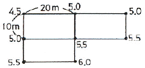
- 100m2
- 150m2
- 200m2
- 250m2
(정답률: 22%)
96. 도로의 수평곡선 설계에서의 곡선장은 얼마인가?
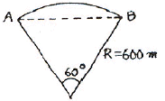
- 약 314m
- 약 628m
- 약 932m
- 약 1,246m
(정답률: 67%)
97. 도로의 횡단경사(구배)에 대한 설명으로 틀린 것은?
- 아스팔트 및 시멘트 포장도로의 경우 횡단경사(%)는 1.5이상~2.0이하로 설치한다.
- 간이포장도로의 경우 횡단경사(%)는 2.0이상~4.0이하로 설치한다.
- 길어깨의 횡단경사와 차도의 횡단경사의 차이는 시공성, 경제성 및 교통안전을 고려하여 8%이하로 하여야 한다.
- 보도 또는 자전거 도로에는 배수를 위하여 6%까지의 횡단경사를 둘수 있다.
(정답률: 50%)
98. 콘크리트용 골재의 필요 성질에 관한 설명중 적합하지 않은 것은?
- 잔골재는 5mm체에 85%이상 통과하는 것으로써 모래라고도 한다.
- 보통 골재는 전건 비중이 2.5~2.7정도의 것으로서, 강모래, 강자갈, 부순모래, 부순자갈등이 있다.
- 골재의 입형은 될 수 있는대로 편평하고 가늘며 길어야 단단한 구조를 가질수 있다.
- 골재의 강도는 시멘트 풀이 경화하였을 때 시멘트 풀의 최대강도 이상이여야 한다.
(정답률: 40%)
99. 평떼 1m2당 단위중량으로 가장 적당한 것은? (단, 평떼의 줄양은 보통토사 1,700kg/m2를 적용한다.)
- 2.55kg/m2
- 7.65kg/m2
- 28.⑤kg/m2
- 50.49kg/m2
(정답률: 8%)
100. 다음 중 조경공사의 특성으로 보기 어려운 것은?
- 공종의 다양성
- 공종의 소규모성
- 지방성
- 규격화 및 표준화가 용이
(정답률: 50%)
6과목: 조경관리론
101. 침엽수종의 관리작업 계획중 적절하지 못한 것은?
- 3~4월에 굵은 가지를 솎아 주어야 한다.
- 5~6월에는 새로 자라나는 순의 선단부를 길이의 1/2~2/3정도 줄여준다.
- 전정시기는 한겨울을 피한 11~12월이나 이른 봄에 실시한다.
- 6~8월 사이에 소나무좀을 구제한다.
(정답률: 25%)
102. 레크에시션의 수용능력의 결정인자 중 고정 인자는?
- 대상지의 성격
- 대상지의 크기와 형태
- 특정활동에 대한 참여자의 반응정도
- 대상지 이용의 영향에 대한 회복능력
(정답률: 38%)
103. 운영관리방식의 장단점이 바르게 연결 된 것은?
- 직영방식의 장점 - 규모가 큰 시설등의 관리를 효율적으로 할수 있다.
- 직영방식의 단점 - 책임의 소재나 권한의 범위가 불명확하게 된다.
- 도급방식의 장점 - 번잡한 노무관리를 하지 않고, 관리의 단순화를 기할수 있다.
- 도급방식의 단점 - 업무가 타성화 되기 쉽다.
(정답률: 40%)
104. 어느 도시공원의 연간 수목 전정비가 2,500,000원 일 경우 대상 수목 주수는? (단, 단위작업률 : 0.5, 작업횟수 : 2년마다 1회, 단가 100,000원)
- 100주
- 200주
- 300주
- 1,000주
(정답률: 20%)
1⑤. 산에서 발생하는 쓰레기를 관리하기 위한 전략중 가장 거리가 먼 것은?
- 공원하부에 소풍, 야영 등을 위한 시설을 계획한다.
- 회수지점의 수평적, 수직적 다변화에 노력한다.
- 수집시설을 적절한 수준까지 감축한다.
- 장려보상을 적극적인 수단으로 이용해야 한다.
(정답률: 알수없음)
106. 도로변 U형 측구의 지반침하에 의한 불균형, 역구배 및 파손개소 여부의 점검은 몇 개월마다 실시하는 것이 이상적인가?
- 3개월
- 6개월
- 9개월
- 12개월
(정답률: 50%)
107. 잔디밭의 굼벵이 방제에 쓰이는 약제는?
- 파라치온유제(파라치온)
- 만코지수화제(다이센엠 45)
- 아시트유제(오트란)
- 디코풀유제(켈센)
(정답률: 25%)
108. 다음 중 암발아 잡초는?
- 냉이
- 바랭이
- 쇠비름
- 향부자
(정답률: 58%)
109. 잔디관리시 지나치게 관수를 많이 해준 결과 야기되는 문제점에 해당되지 않는 것은?
- 토양산도 증가
- 토양 속의 산소량 부족
- 뿌리의 생장억제
- 토양속 영영분의 용탈
(정답률: 56%)
110. 조경수목의 관수시 단위시간당 유실된 수분의 양(min, inch)을 표시하는 것은?
- ET
- pF
- pH
- C/N
(정답률: 18%)
111. 건조, 수축등에 균열, 파손되기 쉽고 알칼리 성분이 스며나와 미관상 좋지 않으나 내구성, 내화성이 좋고 재료확보와 유지 관리 면에서 용이한 조경 시설물 재료는?
- 목재
- 석재
- 콘크리트재
- 합성수지재
(정답률: 38%)
112. 다음 중 공원내 공원녹지의 보전을 위한 이용지도의 대상이 되는 행위시설은?
- 유치원, 학교등의 단체에 대한 활동프로그램의 조언
- 공원녹지의 손상, 오손
- 공원내의 루트, 시설의 유무소개
- 식물관찰, 조류관찰, 오리엔터링등의 지도
(정답률: 47%)
113. 흰불나방, 미루나무 재주나방, 버들재주나방, 텐트나방, 박쥐나방등의 해충에 가장 많이 피해를 받는 수목은?
- 포플러류
- 소나무류
- 오리나무류
- 참나무류
(정답률: 34%)
114. 가로축에 일수를 잡음으로써 각 작업의 소요일수를 알 수 있고, 작업의 흐름이 좌에서 우로 이행되는 관계로 작업간의 관련을 어느정도 파악할수 있는 공정표는?
- 간트(GANTT)차트 횡선식 공정표
- 바(bar)차트 횡선식 공정표
- 곡선식 공정표
- 네트워크식 공정표
(정답률: 47%)
115. 초봄에 식물의 발육이 시작된후 0℃이하로 갑작스럽게 기온이 하강함으로써 식물체에 해를 주게 되는 것은?
- 조상
- 일소
- 동상
- 만상
(정답률: 50%)
116. 운영관리의 시스템을 구성하는 요소가 아닌 것은?
- 사회적 배경 및 법제
- 조경공간의 규모
- 직원의 사기
- 예산 및 재무제도
(정답률: 27%)
117. 다음 중 초화류의 시비내용으로 거리가 먼 것은?
- 추비에 질소질비료가 많으면 내한성이 강해져서 동해를 받기 어려우므로 질소(N), 인산(P2O5), 칼리(K2O)성분을 각각 10g/m2의 기준을 지킨다.
- 초종을 고려하여 시비량과 시비횟수를 결정한다.
- 화단 초화류는 집약적 관리가 요구되므로 가능한 한 유기질비료를 기비로서 연간 1회, 화학비료를 추비로서 연간 2~3회 시비한다.
- 기비(밑거름)는 이른봄에 퇴비등 완효성 유기질 비료와 질소, 인산, 칼리 각각 6g/m2를 추가하여 시비한다.
(정답률: 9%)
118. 도시광장의 기능유지 관리에서 고려햐영 할 사항이 아닌 것은?
- 보행자의 집합기능을 고려한다.
- 도시미를 높이는 수경(修景)기능을 유지한다.
- 오픈스페이스 기능 및 교통의 정리기능을 유지한다.
- 녹지의 생산성 향상기능을 고려한다.
(정답률: 47%)
119. 봄에 꽃이 진후에 전정(춘계전정)하는 것은?
- 장미
- 목련
- 벚나무
- 배롱나무
(정답률: 28%)
120. 흰불나방은 겨울철을 어떤 상태로 월동하는가?
- 번데기
- 유충
- 알
- 성충
(정답률: 30%)